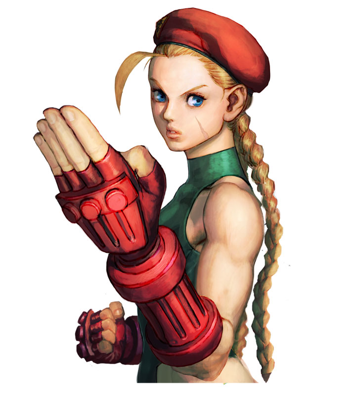

Cammy is a quick, close range fighter. She lacks any projectile or long-reaching attacks, and therefore hurls herself at the enemy relying on speed and priority.
For example, her standing hard punch can often cancel an opponent's attack outright, if it connects. Priority such as this makes her one of the easiest characters to use in Capcom vs. SNK 2. Her original incarnation in Super Street Fighter II had trouble evading projectile attacks, so later incarnations involved reworked and additional special moves to evade fireballs with ease. Cammy's anti-air move, the Cannon Spike causes her to quickly kick one leg upward into the air, twisting her body and flipping backward, putting her at a safe range from the opponent when the move completes. It has very high priority for such a safe move.
Cammy's early history is unknown; her first appearance in the Street Fighter chronology was Street Fighter Alpha 3, where she was a soulless Doll sent to assassinate Dhalsim. Dhalsim used his spiritual powers to make her self-aware, and she realized that Shadaloo was controlling her. M. Bison sent Vega to observe her. When Vega confronted her, he revealed to her that she was an "experiment" and was no longer needed. As revealed in his own storyline Vega started having doubts about killing Cammy, asking himself if he really only cared about worthy foes, and after a fight where he admitted having underestimated Cammy he allowed her to go. Vega also threatened Cammy by revealing that Shadaloo's hit squads were coming for her. Cammy wondered why Shadaloo wanted to destroy her, since she had never committed any altercations against them.